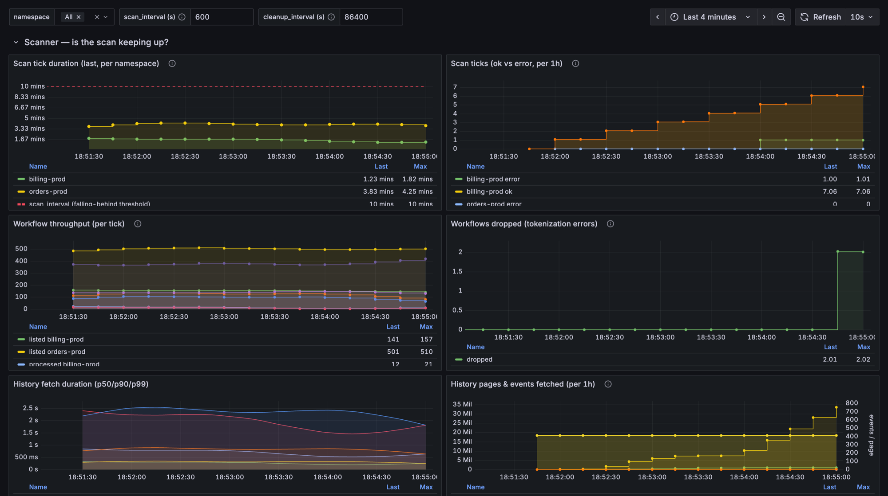
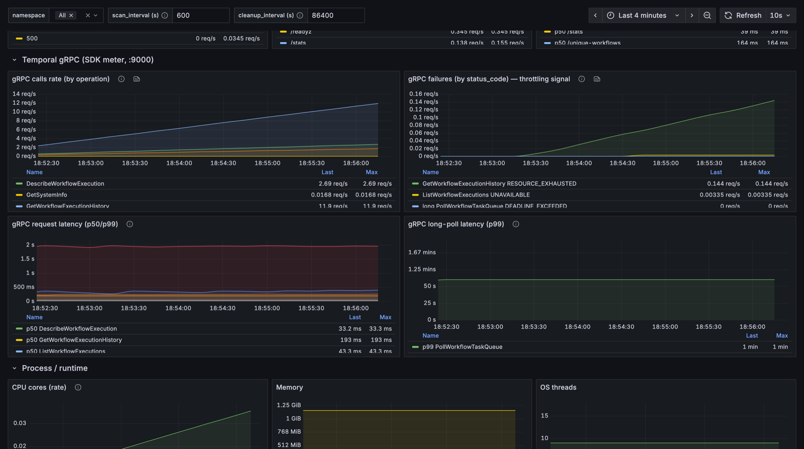

Metrics¶
Every metric workdup emits: what it means, how to read it, and the alert worth setting.
workdup exposes metrics on two HTTP ports, on purpose:
| Endpoint | Contains | Exporter |
|---|---|---|
:8000/metrics ([http].port) |
Application metrics — scanner, database, cleanup, HTTP, process | metrics-exporter-prometheus |
:9000/metrics ([http].temporal_metrics_port) |
Temporal SDK gRPC client metrics | the SDK's own Prometheus exporter |
The split matters when you write queries. On :8000 histograms are rendered as
summaries, so you read quantile="0.5" series directly and histogram_quantile()
does not apply. On :9000 the SDK exports real histogram buckets, so there you do
use histogram_quantile() over _bucket series.
A Grafana dashboard is provisioned from
docker/grafana/dashboards/workdup.json
(title workdup — Observability). See Installation for the local
Prometheus + Grafana stack.
{kind=link}

These screenshots use synthetic data
The dashboards on this page were rendered against a fake metrics generator, not a
production deployment, so the numbers are illustrative only — treat them as a guide to
the shape of each panel, not as reference values for your own system. Namespaces are
named orders-prod and billing-prod for the same reason.
Dashboard variables¶
| Variable | Type | Default | Purpose |
|---|---|---|---|
$namespace |
query (multi-select) | All |
Filters every panel by Temporal namespace. Populated from label_values(scan_ticks_total, namespace). |
$scan_interval |
textbox | 600 |
Your scan_interval in seconds (10m = 600, 30m = 1800, 60m = 3600). Drives the red "falling-behind" threshold on Scan tick duration — set it to match your configuration. |
$cleanup_interval |
textbox | 86400 |
Your cleanup_interval in seconds (1d = 86400, 12h = 43200). Drives the per-interval window on Cleanup runs (expect ~1 ok run per interval). |
The interval variables are not auto-detected
They are plain textboxes. If your workdup.toml says scan_interval = "10m" and
$scan_interval still says 600, the threshold line is right only by luck. Update
both together — and remember scan_interval is per-namespace overridable, so one
dashboard threshold cannot be correct for every namespace at once.
Scanner¶
The core loop: list workflows, fetch changed histories, hash, store.
Scan tick duration¶
- Metric:
scan_tick_duration_seconds— a gauge, labelednamespace, emitted once per tick. It is the wall-clock time of the wholescan()call: list preferable workflows via the Visibility API → for each, comparehistory_length, fetch history, tokenize, hash, and upsert. - Query:
scan_tick_duration_seconds{namespace=~"$namespace"}(one line per namespace), plusvector($scan_interval)rendered as the red dashed threshold. - How to read it: it is a gauge, so it shows the duration of the most recent scan
and holds that value until the next tick — the line is flat/stepped, not spiky,
and it does not drop to
0between ticks. A flat15smeans "the last scan took 15s." Compare against$scan_interval: if the line approaches or crosses it, the scan is not keeping up. The scanner usesMissedTickBehavior::Delay, so an overrun silently delays the next scan and stretches data freshness — which is why watching this against the interval is the primary "are we keeping up?" signal. - Alert:
Match the number to your scan_interval.
Scan ticks (ok vs error)¶
- Metric:
scan_ticks_total— a counter, labelednamespaceandresult(ok/error), incremented once per tick. - Query:
- How to read it: counters are monotonic and reset to
0on restart, so they are never plotted raw —increase()turns "total forever" into "how many happened in the window." Theerrorline is the signal: any nonzero value means a scan tick failed (errors include TemporalRESOURCE_EXHAUSTEDthrottling). Theokline just confirms ticks are still happening. - Alert:
Workflow throughput¶
-
Metrics:
scan_workflows_listed/scan_workflows_processed/scan_workflows_updated/scan_workflows_skipped— gauges, labelednamespace, set once at the end of eachscan()with that tick's totals.Gauge Meaning listedworkflows scanned via the Visibility API this tick processednew or history-changed (went through fetch → tokenize → hash) updatedactually written to the DB (upsert) skippedunchanged ( history_lengthmatched), no history fetchedMatching lifetime counters are also emitted:
workflows_listed_total,workflows_processed_total,scan_workflows_updated_totalandworkflows_skipped_unchanged_total. -
Query: the four gauges directly, e.g.
scan_workflows_listed{namespace=~"$namespace"}. - How to read it: these are per-tick counts, not per-second throughput. A gauge
holds the last cycle's total, so the line is stepped and stays flat between ticks.
listed ≈ processed + skipped, andupdated ⊆ processed. The processed/listed ratio shows how much churn each scan finds — mostlyskippedmeans little changed since the last tick, which is a healthy steady state. Per-tick gauges are used instead ofincrease()over a window because scan ticks are irregular (MissedTickBehavior::Delay), so any fixed window would alias or split a tick's counts. - Lifetime totals: use the counters over the dashboard range, e.g.
increase(workflows_processed_total{namespace=~"$namespace"}[$__range]). - Tuning
scan_intervalwith this panel: theprocessedvsskippedsplit is a direct measure of how often workflows actually change between ticks — exactly the input for choosingscan_interval:- Almost every tick
skipped, littleprocessed→ you are scanning more often than workflows change; raisescan_intervalto cut load on Temporal with no real loss of freshness. processed/updateda large share oflistedon most ticks → workflows change faster than you scan; lowerscan_intervalfor a fresher deduplicated set, at the cost of more Visibility and history load.- Target mostly
skippedwith a small steadyprocessedtrickle. Re-check after load changes; the right interval can differ per namespace.
- Almost every tick
- Alert: none — diagnostic. The actionable failures are covered by Scan ticks (error) and Scan tick duration.
Workflows dropped (tokenization errors)¶
- Metric:
workflows_dropped_total— a counter, labelednamespaceonly. - What it tells you: how many workflows the scanner had to skip because it could
not turn their history into a semantic hash — it hit a Temporal event type the
tokenizer does not handle yet. A skipped workflow is missing from the deduplicated
set, so your replay coverage has a blind spot. You want a flat
0. - Query:
The or vector(0) keeps a green 0 line, so an empty panel reads as "healthy", not
"metric missing".
- How to read it: 0 and flat → every workflow hashed cleanly. Any point above 0 →
one or more workflows were dropped that hour, almost always because a new SDK or event
variant appeared that the tokenizer does not cover.
- What to do when it goes above 0: the reason is deliberately not a metric
label — putting it there would explode cardinality (see
Cardinality). Open the scanner
logs instead; every drop logs the full detail:
level=error msg="skipping workflow because semantic hash would be incomplete"
workflow_id=... run_id=... error="Undefined type while trying to make hash string: <EventType>"
Search for skipping workflow because semantic hash, or filter by workflow_id /
run_id. The error= field names the unhandled event type — add a rule for it in
tokenizer.rs
and the drops stop. See How it works for the normalization rules.
- Alert:
increase(workflows_dropped_total{namespace=~"$namespace"}[1h]) > 0 # a workflow fell out of the dedup set
History fetch duration¶
- Metric:
history_fetch_duration_seconds— a histogram exported as a summary, labelednamespace. Recorded once per processed workflow, so a busy tick produces many samples and a real latency distribution. - Query:
history_fetch_duration_seconds{namespace=~"$namespace", quantile="0.5"}(and0.9,0.99) — read directly; there is nohistogram_quantileon:8000. - How to read it:
- p50 — a typical fetch (small history, single page).
- p90 — most fetches.
- p99 — the tail: big histories (many events → many pages) or Temporal being slow. This is the line to watch; a few huge workflows dominate the whole scan, so p99 here is usually the explanation for a spike in Scan tick duration.
- Caveats: fetches are bursty — they all happen inside the tick, then it is quiet for
scan_interval— so each percentile really means "over the last tick's fetches." Sample size swings too: in steady state only a few workflows are processed, so p99 is noisy (≈ the max of a handful); during a backfill the percentiles are solid. Being a summary, the values are per-namespace and cannot be aggregated across namespaces or replicas. - Alert: rarely deserves one on its own — watch p99 next to Scan tick duration. If you want one:
History pages and events fetched¶
Experimental
This panel is a tuning aid for maximum_page_size, which is currently hard-coded to
0 (server default) in
temporal.rs.
The plan is to promote it to a per-namespace config option — until then the panel
only informs the value, it cannot be applied from config.
- Metrics:
history_events_fetched_totalandhistory_pages_fetched_total— counters, labelednamespace.events= data pulled;pages= gRPC calls toGetWorkflowExecutionHistory(one per page). - Queries (per 1h with
increase, because fetches are bursty):
sum by (namespace)(increase(history_events_fetched_total{namespace=~"$namespace"}[1h]))
sum by (namespace)(increase(history_pages_fetched_total{namespace=~"$namespace"}[1h]))
The ratio of the two is events per page (right Y-axis) — the effective page size
the server is handing you.
- How to read it, and when to tune:
- Low events/page + many pages → lots of round-trips for little data each. Raising
maximum_page_size pulls more events per request → fewer pages → lower fetch
latency. This is the lever.
- events/page already near the server cap → pages are not the bottleneck; the
history is simply large. Bumping page size will not help much.
- Rule of thumb: measure here first, then set a value (e.g. 500–1000) and confirm
pages and p99 fall. Do not guess. The server caps page size, and larger pages mean
larger gRPC messages.
- Alert: none — diagnostic/tuning, not an SLO.
Database (SQLite)¶
Gauges refreshed periodically from the SQLite store. workflow_rows and
db_distinct_hashes are emitted per namespace; db_file_bytes is global, since
there is one shared DB file.
Workflow rows¶
- Metric:
workflow_rows{namespace}— a gauge: total rows currently tracked for that namespace, i.e. how many(workflow_id, run_id)pairs the scanner holds state for. - Query:
sum by (namespace)(workflow_rows{namespace=~"$namespace"}) - How to read it: the size of the tracked set. It grows as new workflows are scanned and shrinks as the cleanup worker removes finished ones — a healthy system settles around the count of live workflows. A number that only ever climbs suggests cleanup is not keeping up.
- Caveat: a namespace whose rows drop to
0stops appearing in theGROUP BY, so its gauge holds the last value until it has rows again. A flat line at a small number can mean "no rows" rather than "a few rows." - Alert: none directly — pair visually with Cleanup rows deleted.
Distinct hashes (the dedup target)¶
- Metric:
db_distinct_hashes{namespace}— a gauge: number of distinct semantic hashes. This is the actual deliverable — the count of unique workflow shapes CI/QA would replay. - Query:
sum by (namespace)(db_distinct_hashes{namespace=~"$namespace"}) - How to read it: always ≤
workflow_rows. The gap between them is the win — many rows collapsing into few hashes means a lot of duplication captured. Paired with Unique ratio (100 * db_distinct_hashes / workflow_rows), where lower % is better dedup. A distinct-hash count rising as fast as rows means workflows are not deduplicating — e.g. a normalization bug making every history look unique. - Alert: worth one if the ratio degrades badly:
DB file size¶
- Metric:
db_file_bytes— a gauge: on-disk size of the SQLite file. Global, not per namespace. - Query:
db_file_bytes - How to read it: a capacity/growth signal for the volume the DB is mounted on.
- Alert: set one against the disk you provisioned, e.g.
db_file_bytes > 5e9.
DB write errors¶
- Metric:
db_writes_total— a counter, labeledop(currently onlyupsert) andresult(ok/error). - Query:
- How to read it: expect a flat
0. SQLite is single-writer, so any error means a write could not land — lock contention,busy_timeout(5s) exceeded, or a disk problem. This is the only place a DB-write failure is distinguishable from other tick errors: a failed write also shows up inscan_ticks_total{result="error"}, but this pinpoints the DB. The success count is deliberately not plotted — it is redundant withscan_workflows_updated, and writes are bursty so a per-second rate sits near zero anyway. - Alert:
DB write duration¶
- Metric:
db_write_duration_seconds— a per-upsert histogram exported as a summary, labeledoponly. Nonamespacelabel by design: write latency is a property of the shared DB file and cross-worker contention, not of any one namespace. - Query:
db_write_duration_seconds{quantile="0.5"}and{quantile="0.99"} - How to read it: a secondary diagnostic, not a primary signal. Local SQLite
upserts are normally sub-millisecond, so p50 hugs
0and only p99 moves — and only under write contention (the scanner's upserts and the cleanup worker's deletes serialize on SQLite's single writer, waiting up tobusy_timeout) or a slow disk. - When to look at it: when DB write errors or Scan tick duration spike. A rising p99 here explains why.
- Alert: none of its own — alert on write errors and tick duration instead.
Cleanup worker¶
Runs on cleanup_interval (default 1d) and removes DB rows for workflows that finished
or disappeared from Temporal.
Cleanup runs¶
- Metric:
cleanup_runs_total— a counter, labelednamespaceandresult. - Query:
sum by (namespace, result)(increase(cleanup_runs_total{namespace=~"$namespace"}[${cleanup_interval}s]))
- How to read it — a per-interval heartbeat: expect ~1
okper interval. Because cleanup runs so rarely, "did it run at all?" is itself the signal:okdrops toward0→ the cleanup worker stopped running (dead or stuck).- any
error→ a whole run threw. Per-workflow gRPC errors are swallowed inside the run, soerrorhere means a DB query failure.
- Alert:
Cleanup rows deleted¶
- Metric:
cleanup_rows_deleted{namespace}— a gauge set at the end of each run with the exact number of rows that run removed (workflows that finished, failed, were canceled, or aged out of Temporal retention). - Query:
cleanup_rows_deleted{namespace=~"$namespace"} - How to read it: the turnover signal — the counterweight to the scanner's inserts
(
workflow_rowsnet change ≈ scanner adds − cleanup deletes). It is a per-run gauge, so it holds the last run's count until the next run:- Steady, moderate deletes per run → healthy reaping.
- Persistently
0while Workflow rows keeps climbing → the tracked set is not being reaped and will grow unbounded. Investigate. - A spike → a batch of workflows completed since the last run. Normal churn.
- Alert: none on its own — pair visually with Workflow rows.
Cleanup duration¶
- Metric:
cleanup_duration_seconds{namespace}— a gauge set at the end of each tick with the wall-clock time the last run took. - Query:
cleanup_duration_seconds{namespace=~"$namespace"} - How to read it — a diagnostic, not an SLO: duration scales with how many aged rows
the run had to check, because each candidate costs one
DescribeWorkflowExecutiongRPC round-trip:- Low and flat → few workflows aged past the threshold.
- Climbing over time → the aged-candidate set is growing, which usually tracks a growing Workflow rows.
- A one-off spike → a large batch aged in at once, or Temporal was slow to answer.
- Alert: none. A stuck or failing run is caught by Cleanup runs.
HTTP API (RED)¶
The control-plane HTTP server is the one request-driven subsystem, so unlike the scan
and cleanup panels these use classic RED (Rate / Errors / Duration): rate() and
percentiles are appropriate because there is continuous, multi-sample traffic from
Kubernetes probes and the Prometheus scrape.
These metrics have no namespace label — the HTTP layer is shared — so they are the
only application panels not filtered by $namespace. See
HTTP endpoints for what each route does.
Requests by status¶
- Metric:
http_requests_total— a counter, labeledroute,method,status, incremented once per request. - Query:
sum by (status)(rate(http_requests_total[$__rate_interval]))— the E. All routes included on purpose: a probe flipping to non-200is itself the alarm. - How to read it: watch for any
4xx/5xxline lifting off zero.2xxjust confirms traffic is flowing. - Alert:
Requests by route¶
- Query:
sum by (route)(rate(http_requests_total{route!="/metrics"}[$__rate_interval]))— the R./metricsis excluded because the Prometheus scrape volume dwarfs everything else and would bury the real API. - How to read it: the traffic mix — confirm CI is actually hitting
/unique-workflowsand/stats, and spot unexpected load. - Alert: none — diagnostic.
Request duration¶
- Metric:
http_request_duration_seconds— a histogram rendered as a summary withquantilelabels, labeledroute. - Query:
http_request_duration_seconds{quantile="0.5"}and{quantile="0.99"}, both filteredroute!~"/metrics|/healthz"— the D, and the most useful HTTP panel. Those two routes are stripped so the latency lines that matter stay legible./readyzis kept, because it does real DB and Temporal work. - How to read it: percentiles are valid here — a real distribution. Rising p99 on
/unique-workflowsor/statsmeans CI reads are slowing, usually a growing table or SQLite contention. - Alert: page on a route-specific p99 threshold if CI depends on read latency:
Temporal SDK / gRPC client¶
Published by the SDK itself on :9000/metrics, not written by workdup. All carry
operation (the RPC name, e.g. ListWorkflowExecutions) and namespace — except
non-namespaced calls such as GetSystemInfo.
{kind=link}

RESOURCE_EXHAUSTED — this is what throttling
looks like before it shows up as failed scan ticks.
Two things in that screenshot are worth internalising, because they are the normal shape rather than a fault:
GetWorkflowExecutionHistorydominates the call rate. It is called once per changed workflow and paginates, so it will always be the tallest line. IfListWorkflowExecutionsever overtakes it, almost nothing is changing between ticks — cross-check Workflow throughput.- Long-poll p99 sits near 60s and that is correct. Long-polls are supposed to block.
This is exactly why they are a separate metric from
request_latency; averaged together they would make ordinary calls look catastrophic.
| Metric | Type | Extra labels | What it covers |
|---|---|---|---|
request |
counter | — | successful gRPC calls, by RPC name |
request_failure |
counter | status_code |
failed calls; gRPC code in SCREAMING_SNAKE |
request_latency |
histogram | — | latency of a normal call |
long_request |
counter | — | long-poll calls |
long_request_failure |
counter | status_code |
failed long-polls |
long_request_latency |
histogram | — | long-poll latency, kept separate because they are long by nature |
- How to read it: this is where throttling shows up. Rate limiting needs no
dedicated metric — the SDK puts the gRPC code in
status_code, sorequest_failure{status_code="RESOURCE_EXHAUSTED"}is a ready-made throttling signal, broken down byoperationandnamespace. When Scan ticks shows errors, this is the panel that says whether Temporal was the cause. - Query: these are real histograms, unlike the
:8000summaries, so use buckets:
- Alert:
Verify these names against your own build
Exact names depend on the Temporal SDK version and the exporter options set in
temporal.rs —
counters_total_suffix and use_seconds_for_durations control whether counters gain
a _total suffix and durations a _seconds one. Confirm before wiring alerts:
and adjust the _bucket expressions if your build differs.
Process and runtime¶
Standard process metrics, collected in-process via the
metrics-process crate and served on the
same :8000/metrics as the application metrics — no sidecar, no separate exporter.
The collector is refreshed in the /metrics handler immediately before rendering, so
values are always fresh at scrape time.
| Metric | Meaning |
|---|---|
process_cpu_seconds_total |
cumulative CPU time |
process_resident_memory_bytes |
RSS — the number to watch against a container limit |
process_virtual_memory_bytes |
virtual size |
process_open_fds / process_max_fds |
file descriptors in use vs the limit |
process_threads |
OS threads — workdup runs one per scanner, one per cleanup worker, plus HTTP |
process_start_time_seconds |
uptime is time() - process_start_time_seconds |
- Why it is here: these say nothing about workflow logic, but they are how you tell "the application is slow" apart from "the pod hit its Kubernetes limits" or "memory is leaking."
- Alert:
process_resident_memory_bytes / 1e6 > 512 # RSS above the container request
process_open_fds / process_max_fds > 0.8 # running out of file descriptors
Cardinality: the rule that breaks Prometheus¶
Never put workflow_id or run_id in a metric label. They are unbounded — every new
pair creates a new time series and will blow up Prometheus storage.
- Workflow identifiers belong in logs and spans, where they already are, for drill-down. See Logs.
- Metric labels carry only bounded dimensions:
namespace,result,op,route,method,status,operation,status_code.